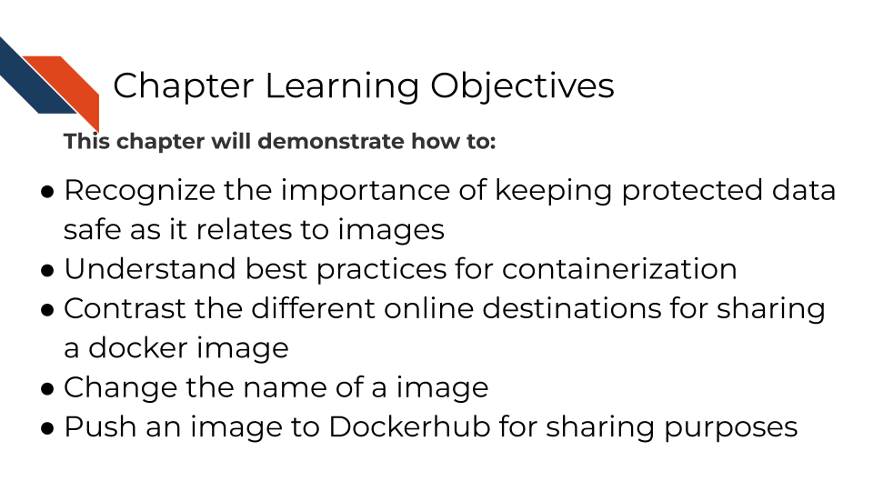
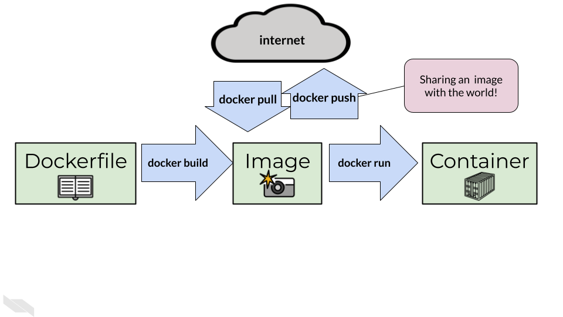
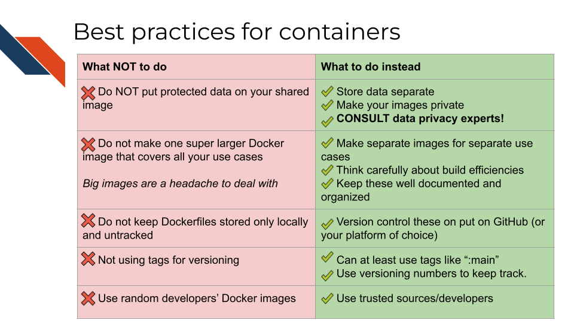
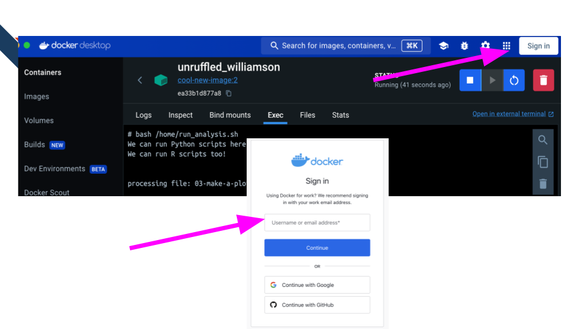
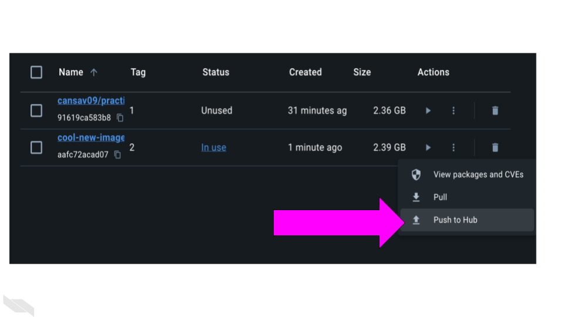

7 Best practices for sharing images
Reproducibility is a community activity. Sharing images is a big component of how images can aid in reproducibility.

But before you really get going with more containerization and swapping images with others in the wide world, its time we talk about some best practices when doing so.
Some of these best practices are ethically and legally consequential, while others are just to save you time and frustration. Ultimately we want to make sure you are containerizing responsibly.
7.1 Best practices of working with containers
7.2 Do not make one super large image that covers all your use cases
Just as in Lord of the Rings where the “one ring to rule them all” proved dangerous, so too is “one docker image to rule them all”. Big images are a headache to deal with. They take a long time to build and to pull, and if anything is broken on them, it can be a headache to troubleshoot.
7.2.1 Alternatives:
There’s no limit on the number of images you can make! There can be a fine art to making separate images for each use case. Too many images can be hard to keep track of, but a very intentional organizational plan for your images can take you far.
7.3 Version control your Dockerfiles
Keeping your Dockerfile stored only locally and untracked is likely to lead to headaches. Version control is always a good idea and containerization is no exception! To learn more about version control see our Intro to Reproducibility in Cancer Informatics course or Advanced Reproducibility in Cancer Informatics course sections on making your project open source with GitHub.
If you do decide to keep your Dockerfiles on GitHub, there are a lot of useful tools to help you manage your images there. GitHub Actions marketplace for examples has a lot of handy tools. See our GitHub Actions course for more on this.
7.4 Versioning is always a good idea
Just like with software development, it’s good to have a system to keep track of things as you develop. Container development can easily get out of hand. Especially if others are using your images, you want to be clear about which versions of containers are in a more risky earlier “development” stage and which are more vetted and ready for use.
Versioning tags can be whatever you’d like them to be. Versioning number systems used elsewhere like major.minor.patch are also used with images.
You can alter versioning numbers either when you are building your image initially or by using the tag command:
docker tag cool-new-image:2 username/cool-new-image:2Other strategies for versioning can mirror git branch naming conventions, so main for the vetted version of the image and dev or stage for a version that’s still being worked on but will probably eventually be released.
There’s no one size fits all for image tags, its really up to whatever you and your team decide works best for your project. Regardless, being intentional, consistent, and clearly documenting any system you choose to use are the main keys.
7.5 Don’t use random developers’ docker images
Images and containers can be difficult to have transparency into the build at times. And unfortunately not everyone on the internet who makes images is trustworthy. To avoid security issues make sure to stick to trusted sources for your docker images. Trust only verified individuals or companies. Try not to wander too far off the beaten path. Better to make your own image from a trusted source’s base image than to use a random strangers’ image that promises to do it all.
7.6 Summary of best practices
{fig-alt=’ A Table summarizing what to do and what not to do with images and containers. Do NOT put protected data on your shared image instead, store data separate or Make your images private and CONSULT data privacy experts! Do not make one super larger Docker image that covers all your use cases. Big images are a headache to deal with. Instead, make separate images for separate use cases. Think carefully about build efficiencies Keep these well documented and organized. Do not keep Dockerfiles stored only locally and untracked instead use version control to put these on put on GitHub (or your platform of choice). Do not not using tags for versioning instead you can at least use tags like “:main” you can use versioning numbers to keep track. Do not use random developers’ Docker images instead stick to Using trusted sources/developers’ width=100%}
7.7 Container Registries
To share our image with others (or our future selves), we can push it to an online repository. There are a lot of options for container registries. Container registries are generally cross-compatible meaning you can pull the image from just about anywhere if you have the right command and software. You can use different container registries for different purposes.
This article has a nice guide to some of the most popular ones.
And here’s a summary of the most common registries:
- Dockerhub – widely used, a default
-
Amazon Web Services Container Registry - includes options for keeping private
- Github container registry - works nicely with GitHub Packages
- Singularity – if you need more robust security
We encourage you to consider what container registries work best for your specific project and team. Here’s a starter list of considerations you may want to think of, roughly in the order of importance.
- If you have protected data and security concerns (like we discussed earlier in this chapter) you may need to pick a container registry that allows privacy and strong security.
- Price – not all container registries are free, but many of them are. What kind of budget do you have for this purpose? Paying is generally not a necessity so don’t pay for a container registry subscription unless you need to.
- What tools are you already using? For example GitHub, Azure, and AWS have their own container registries, if you are already using these services you may consider using their associated registry. (Note GitHub actions works quite seamlessly with Dockerhub, so personally I haven’t had a reason to use GitHub Container Registry but it is an option.)
- Is there an industry standard? Where are your collaborators or those at your institution storing your images?
While there are lots of container registry options, for the purposes of this tutorial, we’ll use Dockerhub. Dockerhub is one of the first container registries and still remains one of the largest. For most purposes, using Dockerhub will be just fine.
7.8 Activity Instructions
First you’ll need to make sure you have a dockerhub account.
Go to the website and login or create an account https://hub.docker.com/
Next, locally you’ll need to log into your account.
docker login -u your_user_name
It will ask for your password. Enter that password.
If you’ve logged in successfully, now we need to prep our image by putting our username in the name.
We can do that by using the tag command. But replace <your_username> with whatever your Dockerhub username is.
docker tag cool-new-image:2 <your_username>/cool-new-image:2Now we can push it to our repository.
docker <your_username> push username/cool-new-image:2You can also do this with this button on Docker Desktop:

Go to https://hub.docker.com/repositories/ and you should see your image listed there!